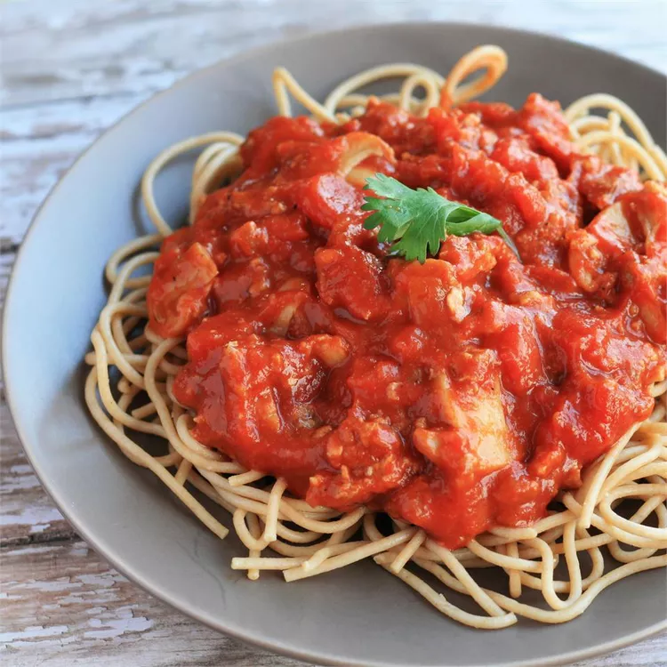

Spaghetti

Description
This delicious tomato sauce for spaghetti simmers over low heat for a rich and meaty homemade taste.
Ingredients
- 1 pound lean ground beef
- 2 ½ cups chopped tomatoes
- 1 ⅓ (6 ounce) cans tomato paste
- 1 (4.5 ounce) can sliced mushrooms
- 2 tablespoons dried minced onion
- 1 teaspoon salt
- 1 teaspoon dried oregano
- ¾ teaspoon white sugar
- ¼ teaspoon ground black pepper
- ⅛ teaspoon garlic powder
- 12 ounces spaghetti